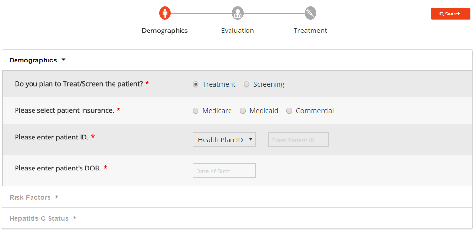
If Treatment is selected the user has to go through all the items from "Demographics", "Evaluation" and "Treatment".
User will have to select the patient insurance, enter the patient ID and select the

For selecting Date user need to follow the below steps
Step 1: Select the Year
Step 2: Select the Month
Step 3: Select the Date
of the patient.
Patient ID can be any one of the following:

User will have to select the patient insurance, enter the patient ID and select the
Date of Birth
For selecting Date user need to follow the below steps
Step 1: Select the Year
Step 2: Select the Month
Step 3: Select the Date
Patient ID can be any one of the following:
Health Plan ID, Medication Record ID or Hospital ID
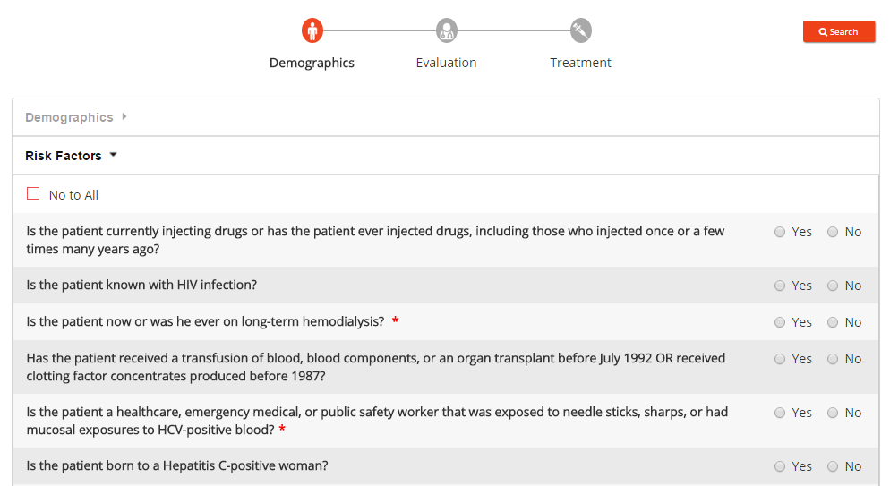
After all the "Demographics" details are entered, the user will have to select from the list of Risk Factors.
[User will have to select options for few of the

No to all will allow user to select option "No" for all the risk factors.
feature is provided to select "No" for all selections.
[User will have to select options for few of the
questions
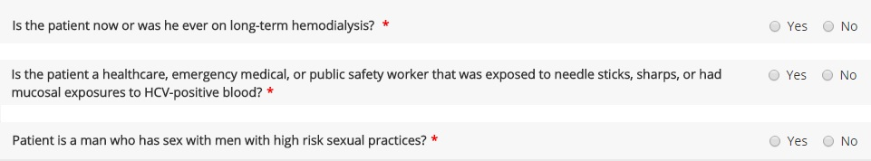
before moving further.]
"No to all"
No to all will allow user to select option "No" for all the risk factors.
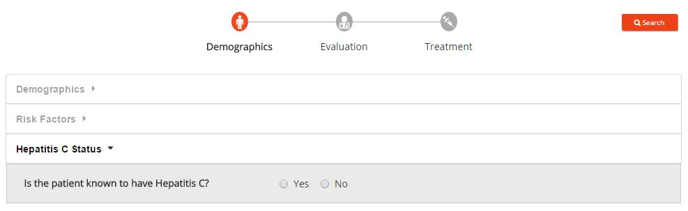
User can select the Hepatitis C Status of the patient before moving to Evaluation.
[This is an optional item for the user.]
[This is an optional item for the user.]
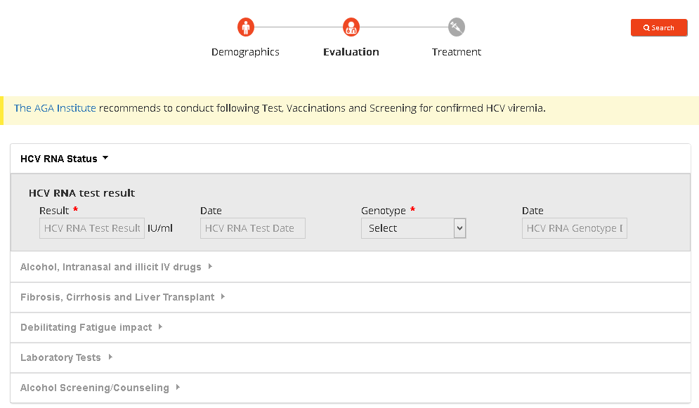
As a part of entering the HCV RNA Status, the user needs to enter the HCV RNA test result, the genotype and the dates on which these results were taken.
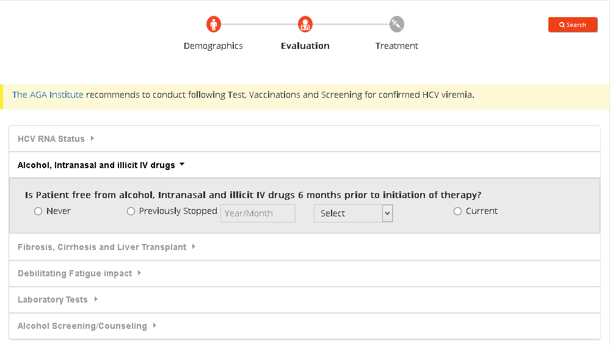
User can select whether the is free from alcohol, Intranasal and illicit IV drugs 6 months prior to initiation of therapy.
If "Previously Stopped" is selected, the user can specify the number of months the patient from when he/she stopped alcohol, Intranasal and illicit IV drugs.
If "Previously Stopped" is selected, the user can specify the number of months the patient from when he/she stopped alcohol, Intranasal and illicit IV drugs.
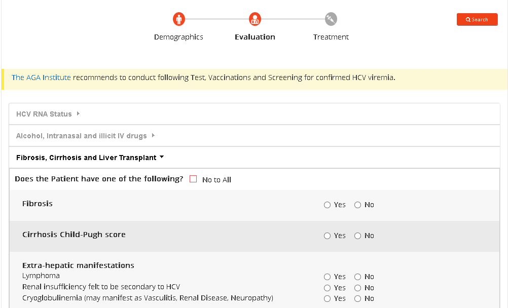
In this section, the user needs to select if patient is suffering from any of the High Risk characteristics like
,
or Liver Transplant.
It is mandatory for the user to select the
of the patient.
No to all will allow user to select option "No" for all the risk factors.
will allow the user to select "No" for all selections.
Fibrosis
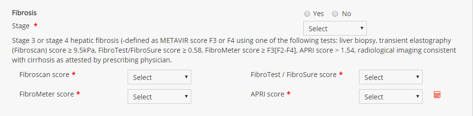
If the patient is having Fibrosis user needs to select "Yes" in the option.
On selection user has to enter the Fibrosis Stage, Fibroscan score, FibroTest / FibroSure score, FibroMeter score and APRI score.
User can eiter select one for the options from the dropdown. If "Other" is selected, user can enter in the corresponding values.
If the patient is having Fibrosis user needs to select "Yes" in the option.
On selection user has to enter the Fibrosis Stage, Fibroscan score, FibroTest / FibroSure score, FibroMeter score and APRI score.
User can eiter select one for the options from the dropdown. If "Other" is selected, user can enter in the corresponding values.
Cirrhosis
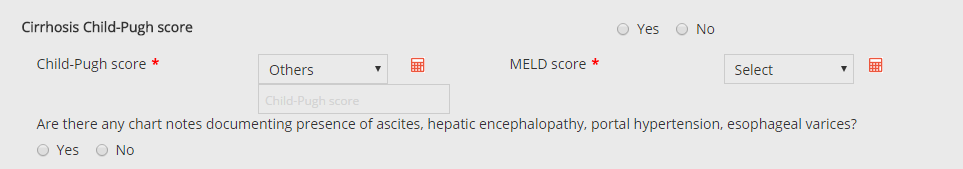
If the patient is suffering with Cirrhosis user needs to select "Yes" in the option.
On selection user has to enter the Child-Pugh score and MELD score.
User can eiter select one for the options from the dropdown. If "Other" is selected, user can enter in the corresponding values.
User can also upload related files if any.
If the patient is suffering with Cirrhosis user needs to select "Yes" in the option.
On selection user has to enter the Child-Pugh score and MELD score.
User can eiter select one for the options from the dropdown. If "Other" is selected, user can enter in the corresponding values.
User can also upload related files if any.
It is mandatory for the user to select the
treatment experience
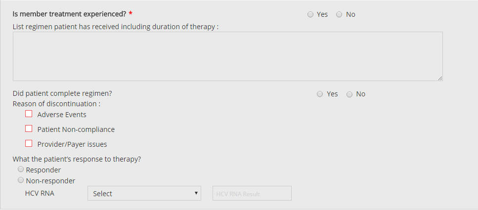
If the patient is not a new member user needs to select "Yes" in the option.
On selection user can enter in any additional details as shown in the screen.
If the patient is not a new member user needs to select "Yes" in the option.
On selection user can enter in any additional details as shown in the screen.
"No to all"
No to all will allow user to select option "No" for all the risk factors.
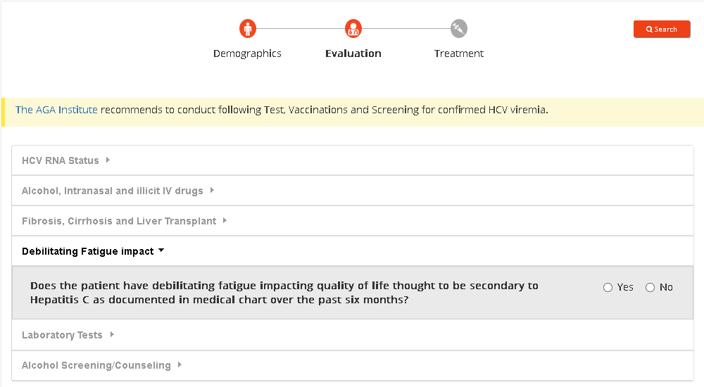
User can select whether the patient have debilitating fatigue impacting quality of life thought to be secondary to Hepatitis C as documented in medical chart over the past six months.
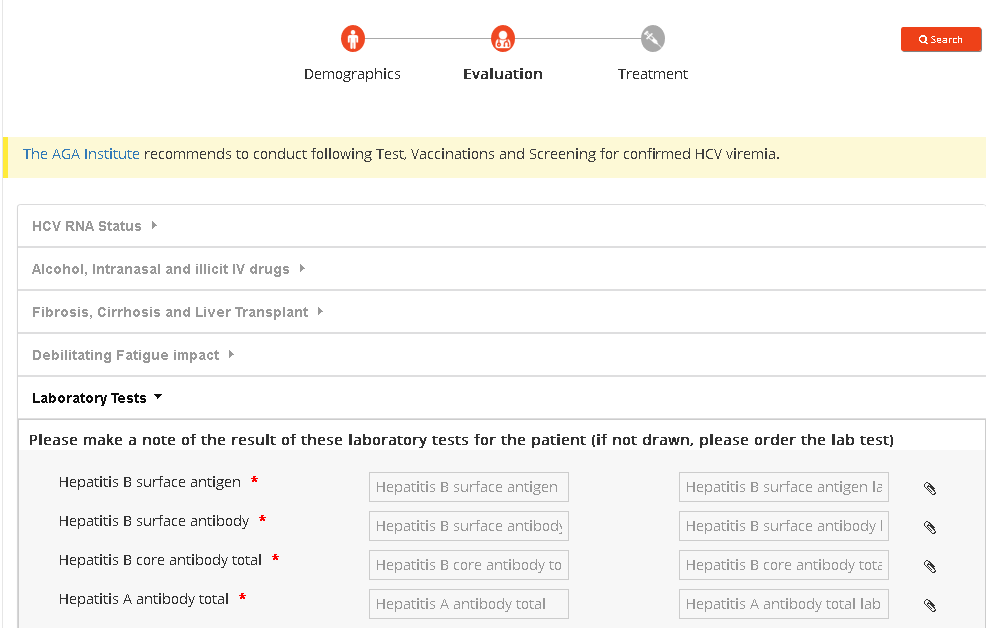
Prior to treating the patient the user will have to make a note of the result of laboratory tests for the patient.
Lab test captures the
,
and
details.
Hepatitis and CBC with differencial details are mandatory items.
User can alternatively
 related documents using the instead of filling in each details.
related documents using the instead of filling in each details.
User can view or delete uploaded files on hover of icon.
feature is provided for easy entry of Lab test dates, if the Lab tests are taken on same date.
After user enters the Bilirubin, INR, Serum Creatinine (SCr), dialysis and Serum Sodium details the MELD score will be calcualted and displayed on the screen.
Lab test captures the
Hepatitis
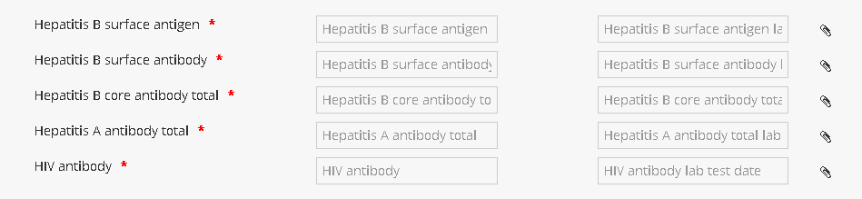
User have to enter the values for each Hepaticis lab results and the dates the results were taken.
User can also upload related files if any.
User have to enter the values for each Hepaticis lab results and the dates the results were taken.
User can also upload related files if any.
AST, ALT
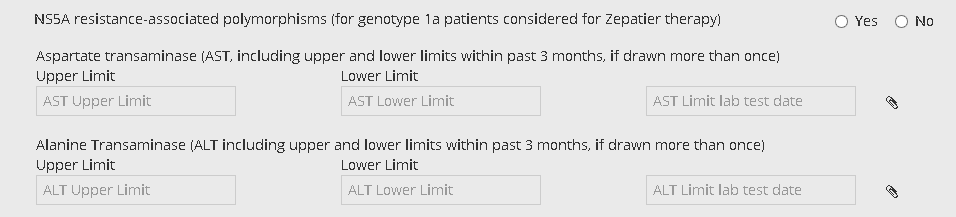
NS5A resistance-associated polymorphisms, AST and ALT Limits are non mandatory items.
User can also upload related files if any.
NS5A resistance-associated polymorphisms, AST and ALT Limits are non mandatory items.
User can also upload related files if any.
CBC with differencial
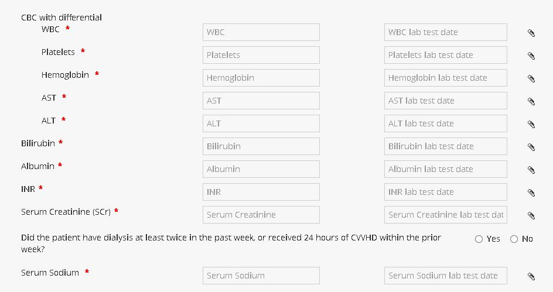
User have to enter the values for each of the CBC with differencial lab results.
User can also upload related files if any.
User have to enter the values for each of the CBC with differencial lab results.
User can also upload related files if any.
Hepatitis and CBC with differencial details are mandatory items.
User can alternatively
upload
User can view or delete uploaded files on hover of icon.
Apply Date to All
After user enters the Bilirubin, INR, Serum Creatinine (SCr), dialysis and Serum Sodium details the MELD score will be calcualted and displayed on the screen.
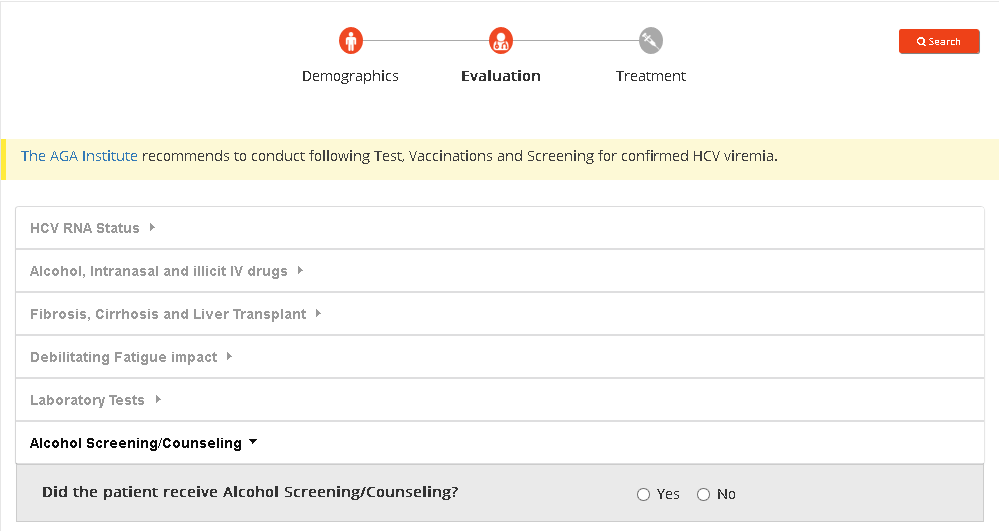
User can select whether the patient have recevied any Alchohol Screening / Counceling.
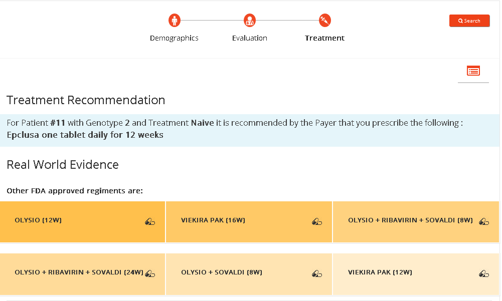
After all the Evaluation details are entered, the user is provided with a screen of treatment recommendations.
Real World Evidence details are also listed.
User can view a summary of all the details of Demographics, Evaluation and Treatment by clicking on icon.
icon.
Real World Evidence details are also listed.
User can view a summary of all the details of Demographics, Evaluation and Treatment by clicking on
icon.